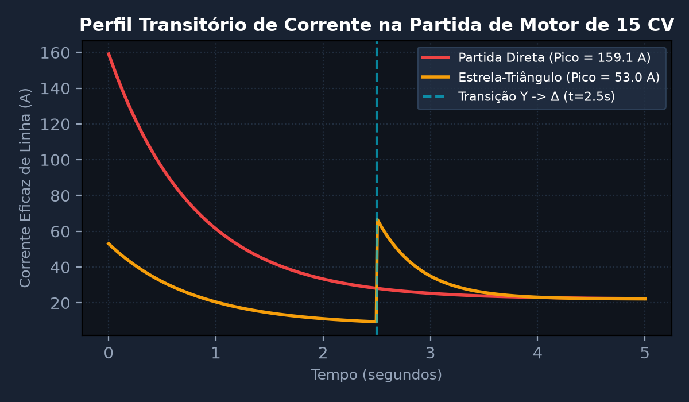
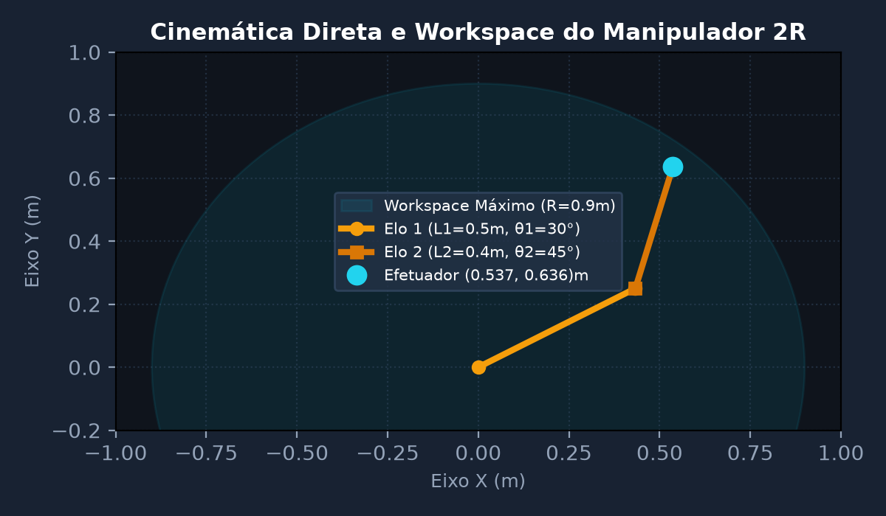
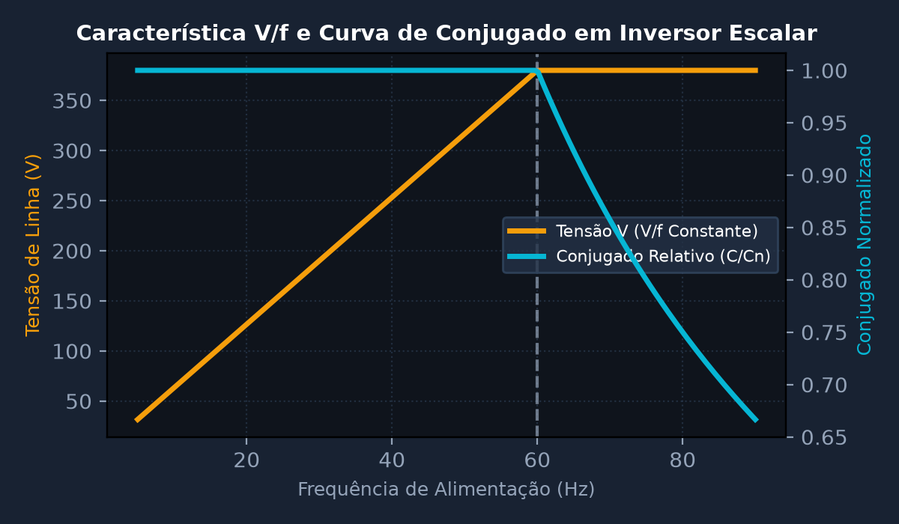
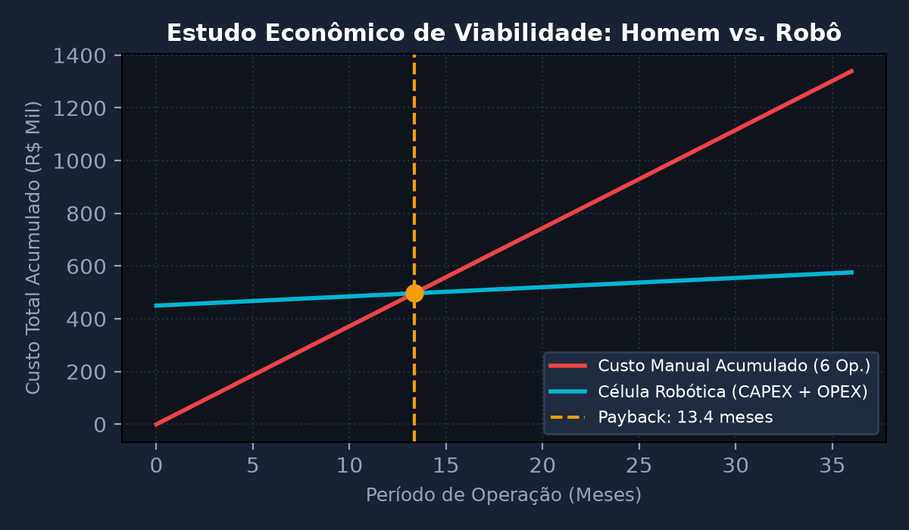
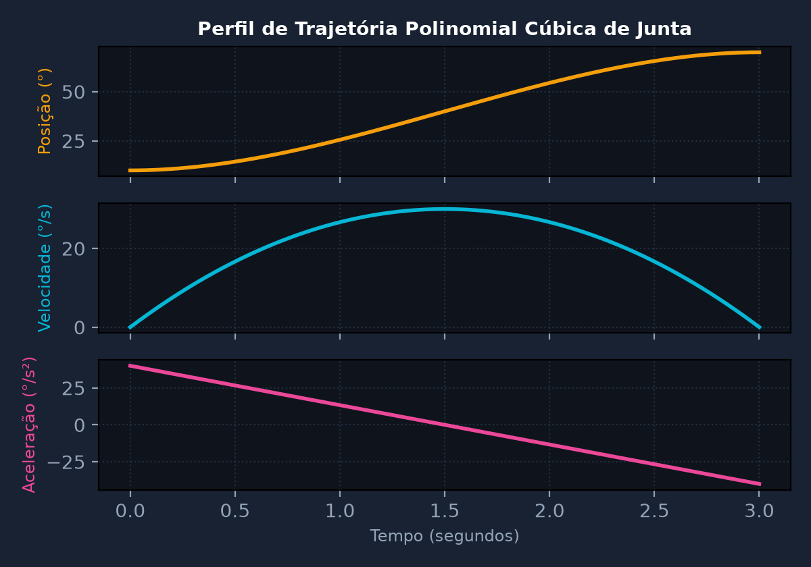
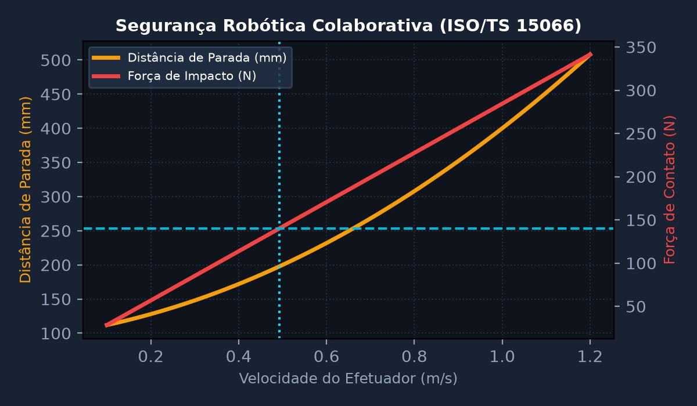

Partida de Motores, Diagramas de Potência e Comandos Elétricos Industriais
Dimensionar o circuito de força e comando para partida de motor de indução trifásico (MIT) de 15 CV, 380 V, 60 Hz, rendimento η = 89% e fp = 0,85. Comparar as correntes de pico e conjugado de partida entre chave de partida direta e partida estrela-triângulo (Y-Δ).
💎 Resolução Algébrica Passo a Passo (Padrão Symbolab)
Convertendo 15 CV para Watts: P = 15 \times 735,5 = 11.032,5 \text{ W}. Aplicando a fórmula trifásica: I_n = \frac{11.032,5}{\sqrt{3} \times 380 \times 0,89 \times 0,85} \approx 22,1 \text{ A}.
Considerando relação típica de corrente de partida I_p/I_n = 7,2: I_{p(\Delta)} = 7,2 \times 22,1 = 159,12 \text{ A}. Esse pico elevado pode causar queda de tensão severa no barramento industrial.
Na configuração estrela (Y), a tensão de fase é V_F = V_L / \sqrt{3}. A corrente de fase reduz para 1/\sqrt{3} e a corrente de linha reduz por fator de 3: I_{p(Y)} = \frac{159,12}{3} \approx 53,04 \text{ A}.
Como o torque é proporcional ao quadrado da tensão aplicada (C \propto V^2), temos C_{(Y)} = \frac{1}{3} C_{(\Delta)}. Portanto, a partida deve ocorrer sem carga mecânica nominal acoplada.
Contator K1 e K2 dimensionados para I_c = 0,58 \times I_n = 12,82 \text{ A}. Contator de estrela K3 para 0,33 \times I_n = 7,3 \text{ A}. Relé térmico ajustado na faixa de 18-25 A.

Cinemática de Manipuladores Robóticos e Parâmetros Denavit-Hartenberg (DH)
Determinar o modelo cinemático direto de um manipulador robótico industrial planar com 2 graus de liberdade (2R) com elos l1 = 0,5 m e l2 = 0,4 m. Calcular a matriz de transformação homogênea global T_2^0 e a posição cartesiana (x, y) do efetuador para as variáveis de junta θ1 = 30° e θ2 = 45°.
💎 Resolução Algébrica Passo a Passo (Padrão Symbolab)
Para o robô planar 2R: Junta 1: \theta_1, d_1 = 0, a_1 = 0,5\text{ m}, \alpha_1 = 0^\circ. Junta 2: \theta_2, d_2 = 0, a_2 = 0,4\text{ m}, \alpha_2 = 0^\circ.
Calculando T_1^0 para a base à junta 1 e T_2^1 da junta 1 ao efetuador com rotação pura em Z e translação a_i.
A matriz global é T_2^0 = T_1^0 \cdot T_2^1. As coordenadas do efetuador são: x = a_1 \cos\theta_1 + a_2 \cos(\theta_1 + \theta_2) e y = a_1 \sin\theta_1 + a_2 \sin(\theta_1 + \theta_2).
Substituindo \theta_1 = 30^\circ e \theta_2 = 45^\circ (\theta_1 + \theta_2 = 75^\circ): x = 0,5 \cos(30^\circ) + 0,4 \cos(75^\circ) = 0,5(0,866) + 0,4(0,2588) = 0,433 + 0,1035 = 0,5365\text{ m}.
Calculando y: y = 0,5 \sin(30^\circ) + 0,4 \sin(75^\circ) = 0,5(0,5) + 0,4(0,9659) = 0,25 + 0,3864 = 0,6364\text{ m}. Efetuador em P = (0,5365; 0,6364)\text{ m}, dentro do raio de alcance R_{max} = 0,9\text{ m}.

Acionamento Eletrônico com Soft-Starters e Inversores de Frequência
Analisar o comportamento do conjugado e da tensão em regime de controle escalar V/f constante para um inversor de frequência alimentando um motor trifásico de 4 polos em frequências de operação f = [15, 30, 45, 60, 75] Hz. Calcular as velocidades síncronas correspondentes e verificar o efeito do enfraquecimento de campo acima de 60 Hz.
💎 Resolução Algébrica Passo a Passo (Padrão Symbolab)
Para manter o fluxo magnético constante no entreferro (\Phi \propto V/f), a tensão eficaz entregue pelo inversor deve variar linearmente com a frequência de modulação PWM até a frequência base de 60 Hz.
Para motor de 4 polos (P = 4): N_s = \frac{120 \times f}{4} = 30 \times f. Para f = [15, 30, 45, 60, 75] Hz: N_s = [450, 900, 1350, 1800, 2250] RPM.
Com V_n = 380\text{ V} e f_n = 60\text{ Hz}, temos a razão k = 380/60 = 6,33\text{ V/Hz}. Para 15 Hz \rightarrow 95\text{ V}; 30 Hz \rightarrow 190\text{ V}; 45 Hz \rightarrow 285\text{ V}; 60 Hz \rightarrow 380\text{ V}.
Acima de 60 Hz, a tensão atinge o teto do barramento DC (V_{max} = 380\text{ V}). Para f = 75\text{ Hz}, V permanece 380 V. A relação V/f cai para 5,06 V/Hz e o fluxo magnético se reduz por \Phi \propto 1/f.
Na região sub-nominal (0 a 60 Hz), o conjugado nominal é constante (torque constante). Acima de 60 Hz, o conjugado decai com 1/f e o torque máximo com 1/f^2, mantendo a potência nominal constante (potência constante).

Análise Técnico-Econômica de Automação e Custo Operacional Homem vs. Robô
Realizar o estudo de viabilidade técnico-financeira para implantação de uma célula robótica de soldagem/paletização substituindo uma operação manual com 3 operadores por turno em 2 turnos diários. O investimento inicial do robô é CAPEX = R$ 450.000,00 com custo de manutenção/energia OPEX = R$ 3.500,00/mês. O custo de cada operador é R$ 6.200,00/mês. Determinar o Payback Simples e o VPL para 5 anos a taxa TMA = 12% a.a.
💎 Resolução Algébrica Passo a Passo (Padrão Symbolab)
Operação com 6 operadores no total (3 por turno \times 2 turnos): Custo mensal mão de obra = 6 \times R\$ 6.200,00 = R\$ 37.200,00/mês. Custo anual = 12 \times 37.200 = R\$ 446.400,00/ano.
OPEX robô = R\$ 3.500,00/mês. Custo anual robô = 12 \times 3.500 = R\$ 42.000,00/ano. Economia bruta mensal = 37.200 - 3.500 = R\$ 33.700,00/mês (\Delta\text{OPEX} anual = R\$ 404.400,00/ano).
Payback = \frac{\text{CAPEX}}{\Delta\text{OPEX}_{\text{mensal}}} = \frac{450.000}{33.700} \approx 13,35 \text{ meses} (\approx 1,11 \text{ anos}).
Fator de anuidade para n=5 e i=12%: a_{5\rceil 12\%} = \frac{1 - (1,12)^{-5}}{0,12} \approx 3,6048. VPL = -450.000 + (404.400 \times 3,6048) = -450.000 + 1.457.781 = R\$ 1.007.781,00.
O projeto apresenta excelente atratividade financeira com retorno do investimento em menos de 14 meses e ganho adicional estimado de 18% em disponibilidade e qualidade da produção (OEE).

Planejamento de Trajetórias no Espaço das Juntas e Cartesiano
Projetar uma trajetória suave de junta para um manipulador robótico utilizando polinômio de interpolação cúbica q(t) = a0 + a1*t + a2*t^2 + a3*t^3. A junta deve mover-se de q0 = 10° para qf = 70° em tempo total tf = 3,0 segundos, partindo e terminando em repouso (velocidades inicial e final nulas). Determinar a velocidade e aceleração máximas.
💎 Resolução Algébrica Passo a Passo (Padrão Symbolab)
Temos q(0) = q_0 = 10^\circ, q(t_f) = q_f = 70^\circ, \dot{q}(0) = 0 e \dot{q}(t_f) = 0. Tempo total t_f = 3\text{ s}.
De q(0) = a_0 \implies a_0 = 10. De \dot{q}(0) = a_1 \implies a_1 = 0. Das condições finais: a_2 = \frac{3(70 - 10)}{3^2} = \frac{180}{9} = 20^\circ/\text{s}^2. E a_3 = \frac{-2(60)}{27} = -\frac{40}{9} \approx -4,444^\circ/\text{s}^3.
Posição: q(t) = 10 + 20 t^2 - 4,444 t^3. Velocidade: \dot{q}(t) = 40 t - 13,333 t^2. Aceleração: \ddot{q}(t) = 40 - 26,667 t.
A velocidade máxima ocorre quando \ddot{q}(t) = 0 \implies t = 40 / 26,667 = 1,5\text{ s} (exatamente na metade da trajetória). \dot{q}_{max} = 40(1,5) - 13,333(2,25) = 60 - 30 = 30^\circ/\text{s}.
Aceleração máxima ocorre no instante inicial t=0 (\ddot{q}_{max} = +40^\circ/\text{s}^2) e desaceleração máxima em t=3 s (\ddot{q}_{min} = -40^\circ/\text{s}^2). Trajetória contínua em C^1 e C^2 garantindo suavidade mecânica.

Robótica Colaborativa, Células Flexíveis e Segurança ISO/TS 15066
Dimensionar os limites de velocidade e desaceleração de segurança para um robô colaborativo (Cobot) atuando em espaço compartilhado homem-máquina conforme os requisitos da norma técnica ISO/TS 15066 (Power and Force Limiting - PFL). Calcular a distância de parada mínima e a força de contato transitório permissível para a região do antebraço humano com massa equivalente do manipulador m = 25 kg.
💎 Resolução Algébrica Passo a Passo (Padrão Symbolab)
A norma estabelece 4 modos de colaboração: Parada monitorada segura, Guia manual, Monitoramento de velocidade/separação e Limitação de potência e força. No modo PFL, contatos físicos são tolerados desde que abaixo dos limiares de dor biomecânica.
Para antebraço humano (m_H = 2,2\text{ kg}) e robô com carga útil (m_R = 25\text{ kg}): \mu = \frac{25 \times 2,2}{25 + 2,2} = \frac{55}{27,2} \approx 2,022\text{ kg}.
O limiar permissível de força para contato quase-estático no braço é F_{max} = 140\text{ N} e rigidez elástica superficial de k = 40\text{ N/mm} = 40.000\text{ N/m}. A velocidade máxima de aproximação é v_{max} = \frac{F_{max}}{\sqrt{k \cdot \mu}} = \frac{140}{\sqrt{40000 \times 2,022}} = \frac{140}{284,4} \approx 0,492\text{ m/s} (492 mm/s).
Considerando tempo de reação do sistema de visão/parada T_r = 0,1\text{ s}, desaceleração de parada a = 2,5\text{ m/s}^2 e margem intrínseca C = 0,1\text{ m}: S = (0,492 \times 0,1) + \frac{0,492^2}{2 \times 2,5} + 0,1 = 0,0492 + 0,0484 + 0,1 = 0,1976\text{ m} (\approx 200 mm).
Configuração de scanner laser de área com zona de alerta em 500 mm (redução para 250 mm/s) e zona de parada em 200 mm, assegurando conformidade de nível SIL 2 / PL d.
